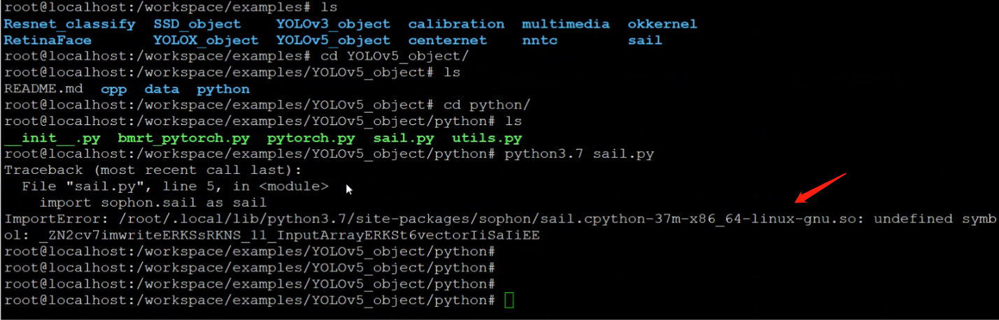

3.1. 环境配置常见问题¶
名词解释：开发环境与运行环境：
开发环境是指用于模型转换或验证以及程序编译等开发过程的环境；运行环境是指在具备SOPHON设备的平台上实际使用设备进行算法应用部署的运行环境。
开发环境与运行环境可能是统一的（如插有SC5加速卡的x86主机，既是开发环境又是运行环境），也可能是分离的（如使用x86主机作为开发环境转换模型和编译程序，使用SE5盒子部署运行最终的算法应用）。
但是，无论您使用的产品是SoC模式还是PCIe模式，您均需要一台x86主机作为开发环境，您的运行环境可以是任何我们已经测试支持的系统平台。
3.1.1. 开发环境配置常见问题¶
3.1.1.1. BM1684、BM1684X 如何安装和使用SDK？¶
3.1.1.2. 如何在docker容器内使用宿主机上的显示设备显示图像？¶
解决方案1：启动容器时添加配置选项，使用宿主机显示器显示画面
目前的主流图像界面服务X11支持客户端/服务端（Client/Server）的工作模式，只要在容器启动的时候，将 『unix:端口』或『主机名:端口』共享给docker，docker 就可以通过端口找到显示输出的地方，和linux系统共用显示设备：
宿主机安装x11-server：
sudo apt-get install x11-xserver-utils
开放权限，允许所有用户，当然包括docker,访问X11 的显示接口:
xhost +
修改启动docker容器脚本，增加选项：
-v /tmp/.X11-unix:/tmp/.X11-unix \ # 共享本地unix端口 -e DISPLAY=unix$DISPLAY \ # 修改环境变量DISPLAY -e GDK_SCALE \ # 与显示效果相关的环境变量 -e GDK_DPI_SCALE
重新启动docker容器
解决方案2：已经启动的容器，通过网络IP连接到x11 server显示图像（本地或局域网内其他主机都可以）
若不想重新启动容器，可以通过IP地址来映射显示设备从而显示图像：
查询x11 server主机IP：假设为192.168.150.100
设置x11 server权限：
sudo gedit /etc/lightdm/lightdm.conf #增加一行 xserver-allow-tcp=true sudo systemctl restart lightdm xhost + #注意加号前应有空格
备注
如果您使用的系统的桌面管理器不是lightdm，那么配置文件可能会不一样。比如ubuntu18.04以上默认使用gdm3，其配置文件为/etc/gdm/custom.conf，您需要在[security]下增加AllowRemoteAutoLogin=true，[xhmcp]下增加Enable=true, Port=177。重启gdm服务的命令为：service gdm restart
在docker容器中设置DSIPLAY变量：
export DISPLAY= 192.168.150.100:0.0
测试是否成功
sudo apt-get install xarclock # 安装这个小程序
xarclock # 运行，如果配置成功，会显示出一个小钟表动画
说明：以上操作主要针对Linux，若您想使用windows或者Mac主机作为显示设备，原理是相似的，请查找类似解决方案配置即可。
3.1.1.3. 关于ABI0和ABI1版本的问题？¶
答：每个操作系统都会为运行在该系统下的应用程序提供应用程序二进制接口（Application Binary Interface，ABI）。ABI包含了应用程序在这个系统下运行时必须遵守的编程约定。 ABI总是包含一系列的系统调用和使用这些系统调用的方法，以及关于程序可以使用的内存地址和使用机器寄存器的规定。 ABI的版本与操作系统、硬件设备有相关。SDK原始包中提供了ABI0和ABI1两个版本的so库，默认为ABI1， ABI0库为 sophon-mw-sophon-opencv-abi0_x.x.x.rpm。
3.1.1.4. 在CentOS7.6上使用gcc 6.5编译程序链接BM-OpenCV库时报找不到符号链接的错误¶
答：Centos下直接安装的编译器，所有版本下默认都是使用D_GLIBCXX_USE_CXX11_ABI=0，与我们的BM-OpenCV编译时使用的ABI版本（ABI=1）不兼容，因此，需要使用我们提供的x86-linux-gcc编译器，以确保ABI兼容，编译器请联系技术支持获取。
3.1.1.5. 如何在开发环境中的Python环境下使用我们提供的BM-OpenCV?¶
答：只需设置好PYTHONPATH环境变量。不同的架构平台，请注意修改对应的路径。
export PYTHONPATH=$PYTHONPATH:/workspace/lib/opencv/x86/opencv-python
3.1.1.6. CentOS宿主机上在官方ubuntu开发docker中使用sail模块报找不到符号错误？¶
答：环境要求的ABI版本和so文件的ABI版本不匹配：具体来说，SDK里原始会存放ABI0 和ABI1 2个版本的库，系统没有使用正确的ABI版本。
3.1.2. 运行环境配置常见问题¶
3.1.2.1. 有哪些环境变量需要手动配置？¶
对于SoC平台，内部已经集成了相应的libsophon、sophon-opencv和sophon-ffmpeg运行库包，位于/opt/sophon/下。只需手动设置opencv环境变量即可。
# 设置环境变量
export PYTHONPATH=$PYTHONPATH:/opt/sophon/sophon-opencv_<x.y.z>/opencv-python
3.1.2.2. 处理器无法正常工作怎么办？¶
答：
检查设备是否为100%利用率，杀掉占用进程；
复位：执行bm-smi –dev=0x0 –recovery；
如果仍然不行，请将设备断电以后再重新上电；
请反馈技术支持人员。